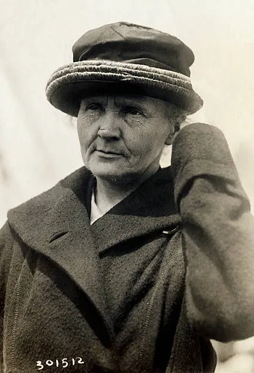

Marie Curie: La Madre de la Física Nuclear
Marie Skłodowska-Curie (Varsovia, 1867 – Passy, 1934) es la personificación de la perseverancia y la pasión científica. Fue una mujer de "primeras veces": la primera mujer en ganar un Premio Nobel, la primera persona en ganar dos en categorías distintas (Física y Química) y la primera mujer catedrática en la Universidad de la Sorbona. Su legado no solo cambió la medicina y la física, sino que rompió techos de cristal en una época en la que la ciencia era un mundo exclusivamente masculino.
El Descubrimiento del Radio y el Polonio
Junto a su marido Pierre Curie, Marie se sumergió en el estudio de los "rayos de Becquerel". Trabajando en condiciones precarias en un cobertizo mal ventilado, lograron aislar dos nuevos elementos químicos: el polonio (nombrado así en honor a su tierra natal) y el radio. Fue ella quien acuñó el término radiactividad para describir el fenómeno de los núcleos atómicos que se desintegran, liberando energía en el proceso.
Ciencia al Servicio de la Humanidad
Durante la Primera Guerra Mundial, Marie Curie demostró que la física tiene aplicaciones prácticas vitales. Ideó las "Petites Curies", unidades móviles de rayos X que permitieron a los médicos tratar a los soldados heridos en el frente, salvando miles de vidas. Su altruismo era tal que nunca patentó sus procesos de aislamiento de elementos, creyendo firmemente que el conocimiento debía pertenecer a toda la humanidad.
Lamentablemente, el desconocimiento de los peligros de la radiación en su época hizo que trabajara durante décadas con materiales altamente peligrosos sin protección. Sus cuadernos de laboratorio todavía hoy, más de un siglo después, siguen siendo altamente radiactivos y deben guardarse en cajas de plomo para ser consultados.
"Nada en la vida es para ser temido, es solo para ser comprendido. Ahora es el momento de comprender más, para que podamos temer menos."
Un Legado Eterno
Marie Curie falleció a causa de una anemia aplásica contraída por sus investigaciones. Hoy descansa en el Panteón de París como una de las mentes más brillantes que el mundo ha conocido. Su trabajo sentó las bases para el tratamiento del cáncer mediante radioterapia y para el desarrollo de la energía nuclear, recordándonos que el camino de la ciencia a menudo requiere un sacrificio personal inmenso en pos del progreso común.
Tendencias
- #RelatividadExtrema: ¿Es el tiempo una ilusión? El debate entre físicos y filósofos sobre la "inexistencia" del flujo temporal.
- #AgujerosDeGusano: Nuevos modelos cuánticos sugieren que podrían conectar el pasado con el futuro y resolver la paradoja de Hawking.
- #ComputaciónCuántica: El salto a la "tolerancia a fallos" y el uso de iones atrapados para simulaciones químicas complejas.
- #MateriaOscura: Detectores de grafeno logran captar interacciones de partículas fantasmales por primera vez en años.
- #MultiversoFísico: La huella fósil en los datos cosmológicos que podría demostrar la existencia de leyes físicas alternativas.
La física de vanguardia este año se centra en unir la gravedad con el colapso cuántico, desafiando nuestra percepción de la realidad cotidiana.